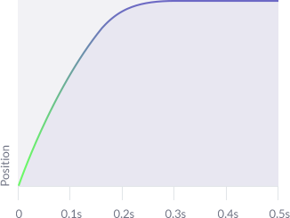
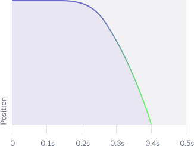

Hidden Depth
'Hidden Depth' is the name of our guiding design philosophy, developed during the creation of our interface transitions and interactions. The name comes from the combination of semi-flat visual design with a hidden and delightful sense of three-dimensional depth that is revealed upon interaction with the various components. This imbues our fresh and uncomplicated user interface with the visual cues and feedback required to make it intuitive to use.
Easing
All components have the same base easing rules to create realistic motion which are:
- Start at full speed, move quickly and ease out sharply but smoothly upon opening, expanding or revealing (see example easing graph).
- Ease in slowly but sharply increase speed upon closing, hiding or collapsing. This happens very slightly faster than opening to move on to next task quickly (see example easing graph).
All elements should follow these base rules but have timings tweaked based on their individual size and formation. Motion blur effect is also applied to elements within panels or containers when in motion to make the feeling of movement more realistic to the human eye.
Ease Out
Ease In
Opening
Opening up components that contain sub-content (e.g. drop down menu or navigation panel) should feel like a hidden drawer being slid smoothly open to reveal the contents. This motion intuitively indicates the content hierarchy. Drawer contents slides in time with the drawer itself to illicit a realistic feeling of depth and layering.
In most applications any proceeding components will be pushed down, out of the way in the same direction and speed as the drawer. In instances where this isn't possible the drawer opens over the top of proceeding elements.
Examples
Sliding
Components that slide into and out of view react with the existing page elements in two main ways:
- The panel slides into view and pushes content items over in the same direction if the page is below tablet width or compresses items responsively if over tablet width (see demo 1 on the right)
- The panel slides over the existing page elements whilst at the same time a dark overlay fades in and blurs the page elements below to place focus on the slide-in panel (see demo 2 right)
Examples
Pushing
Components that appear visually flat depress like an actual button when pushed giving a sense of realistic depth to the interface and providing the user with satisfying, familiar feedback that they have performed an action or turned something on.
When turning something on (e.g. a check box) the item being pressed changes to it’s on state when released. When turning off the reverese happens and the off state is shown on released.
In a link button the link text and/or icon are pushed away slightly when pressed and bounce back when released to again give a feeling of being physically engaged.
Hovering
Every interactive component has a hover state to indicate that they are active and will respond to user input. The basic hover state is a darkening of the component or the component's background. For prominent calls to action (e.g. apply buttons) the hover state is Reflection Red #ff496a to indicate their significance.
All hovers fade smoothly in and out, the fade out being slightly quicker than the fade in.
The selected colour of elements that have performed a function, been selected or turned on is Reflection Green #1bc79f, a colour asscoiated with success or correct behaviour.